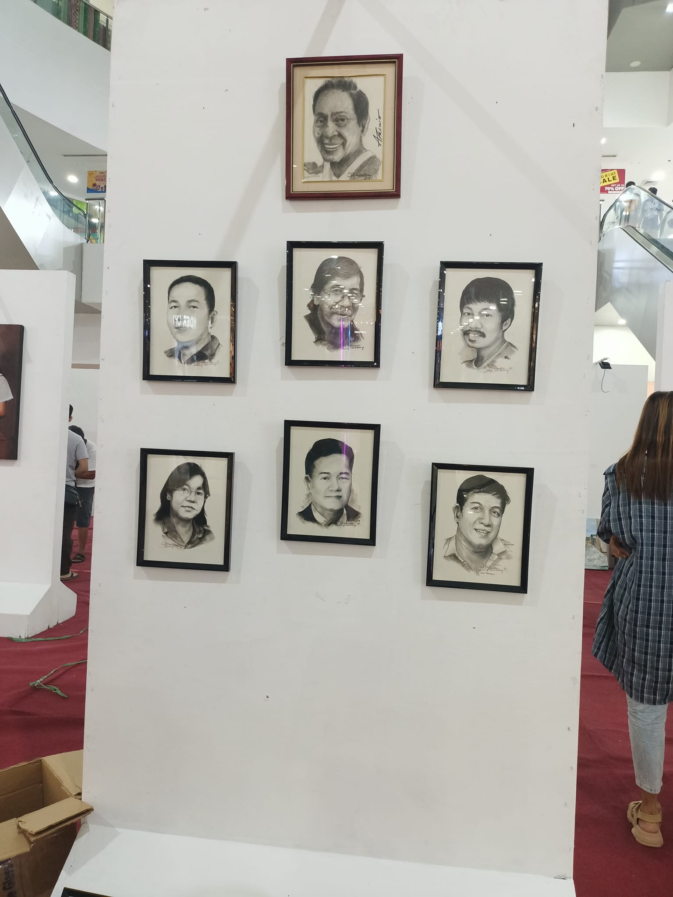

Bayanihan of Art: A Memorable Gallery Exhibit at Fishermall Malabon
Step inside a world where creativity, community, and Filipino talent shine! Our recent exhibit at Fishermall Malabon wasn’t just an art display—it was a celebration of local passion, teamwork, and on-the-spot magic. For weeks, the gallery was alive with the sound of sketching pencils, laughter, and excited conversations with art lovers and collectors.
A Gathering of Artists, A Gallery of Stories
There’s something magical about setting up a gallery with friends and fellow artists. Together, we transformed the Fishermall event center into a vibrant space filled with portraits, landscapes, and unique masterpieces. Each wall told a new story, and every frame was a tribute to countless hours of dedication and imagination.
The best part? We worked hand-in-hand, fixing frames, planning layouts, and making sure each artwork got its time to shine. It was real bayanihan—artists helping artists—proving that when creative minds unite, the results are truly inspiring!
On-the-Spot Sketching: A Crowd Favorite
The exhibit wasn’t just for looking—it was interactive! Many visitors stopped by our booth to have their portraits sketched live. Whether you were young or young-at-heart, everyone wanted to bring home a piece of the moment. The smiles, laughter, and reactions of our clients as they saw their on-the-spot sketches made every second worth it.
Some even came back for more, bringing their families and friends to join the fun! These spontaneous art sessions reminded us that art is not just about technique—it’s about connection, memory, and sharing happiness.
A Showcase of Local Masterpieces
From detailed charcoal portraits to vibrant paintings of everyday Filipino life, the gallery featured the best works of our co-artists. Each artwork reflected our individual styles and stories, but together they created a powerful visual journey for everyone who visited.
Relive the Experience!
Couldn’t make it to the exhibit? Watch this short video and feel the creative buzz, see the artworks, and witness real-time sketching moments!
Want to own a piece of our art or book an on-the-spot sketch for your next event? Contact us today — let’s make more creative memories together!
Art isn’t just for the gallery—it’s for everyone. Let’s keep celebrating creativity, community, and the beautiful stories that only Filipino artists can share!